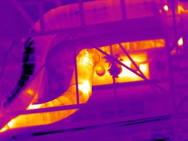

OpenCv
OpenCV (Open Source Computer Vision) is a library of programming functions mainly aimed at real-time computer vision, developed by Intel Russia research center in Nizhny Novgorod, and now supported by Willow Garage and Itseez.[1] It is free for use under the open-source BSD license. The library is cross-platform. It focuses mainly on real-time image processing. If the library finds Intel's Integrated Performance Primitives on the system, it will use these proprietary optimized routines to accelerate itself.

C++
C++ (pronounced as cee plus plus, /ˈsiː plʌs plʌs/) is a general-purpose programming language. It has imperative, object-oriented and generic programming features, while also providing the facilities for low-level memory manipulation.
Algorithme Analyse Image
Le type de language utilise pour nos algorithme sont OpenCv et le C++
OpenCV (pour Open Computer Vision) est une bibliothèque graphique libre,
initialement développée par Intel, spécialisée dans le traitement d'images en temps réel.
La société de robotique Willow Garage assure le support de cette bibliothèque depuis 2008.
Cette bibliothèque est distribuée sous licence BSD.
NVidia a annoncé en septembre 2010 qu'il développerait des fonctions utilisant CUDA pour OpenCV.
Elle propose la plupart des opérations classiques en traitement bas niveau des images
lecture, écriture et affichage d’une image
calcul de l'histogramme des niveaux de gris ou d'histogrammes couleurs
lissage, filtrage
seuillage d'image (méthode d'Otsu, seuillage adaptatif)
segmentation (composantes connexes, GrabCut)
morphologie mathématique.
Image de base
Contour
Pipe decoupage
Canny
Canny
Laplacian
Sobel
Reseau de neurones

Amelioration Hardware Drone
Au niveaux harware pour un gain de precision, optimisation et de vitesse de calcule.
C'est option materiel peuve apporter beaucoup.
Capteur de distance
Le Capteur de Distance Laser LIDAR-Lite est une solution de mesure au laser essentielle, puissante, évolutive et économique prenant en charge une large gamme d'applications (ex : drones, robotique générales, détection industrielle et bien plus). Il mesure la distance, la rapidité et la force du signal de cibles coopératives ou non à des distances de zéro à plus de 40 mètres. Il offre la plus haute performance disponible pour un capteur de distance à un seul faisceau de sa catégorie.

Détecteurs Ultrasoniques
le capteur à ultrasons avec la plus longue portée à haute résolution en plein air, résistant aux intempéries Petit module léger avec une résolution d'1 mmi Lisez depuis chacune des 3 sorties de capteurs : tension analogique, série, largeur d'impulsioni Quasiment aucune zone morte pour le capteur, pour des objets à moins de 50 cm avec un ordre de grandeur type de 50 cm Conçu pour une intégration simple dans votre projet ou produit Calibrage automatique en temps réel (tension, humidité, et bruit ambiant) Filtrage du microprogramme pour une excellente tolérance au bruit et une suppression des signaux de brouillage Protection contre l"eau (IP67), option F de protection optionnelle contre les produits chimiquesi Conforme aux raccords de tuyauterie en PVC de 1,91 cm électriques standard pour un montage facile

Camera infrarouge ou thermique
Une caméra thermique enregistre les différents rayonnements infrarouge (ondes de chaleur) émis par les corps et qui varient en fonction de leur température. Contrairement à ce que l’on pourrait penser, une caméra thermique ne permet pas de voir derrière une paroi ou un obstacle. Elle reproduit la chaleur emmagasinée par un corps, ou montre le flux thermique d'une paroi en raison d’un foyer se trouvant à l’arrière. Les vitres ainsi que les parties métalliques polies reflètent l’image thermique tel un miroir. Cette image, bien que moins nette, peut cependant induire un observateur en erreur. Bien que la longueur d'onde du rayonnement infrarouge dépende de la température, les caméras thermiques ont en général un seul canal (comme une caméra qui filme en "noir et blanc"), et les caméras se contentent de produire une image de l'intensité du rayonnement, qui permet également d'apprécier la température de la source. La couleur produite par la caméra est une fausse couleur, obtenue en associant une couleur à l'intensité reçue, afin de faciliter la lecture directe de la température : à chaque couleur de l'image correspond une température.
